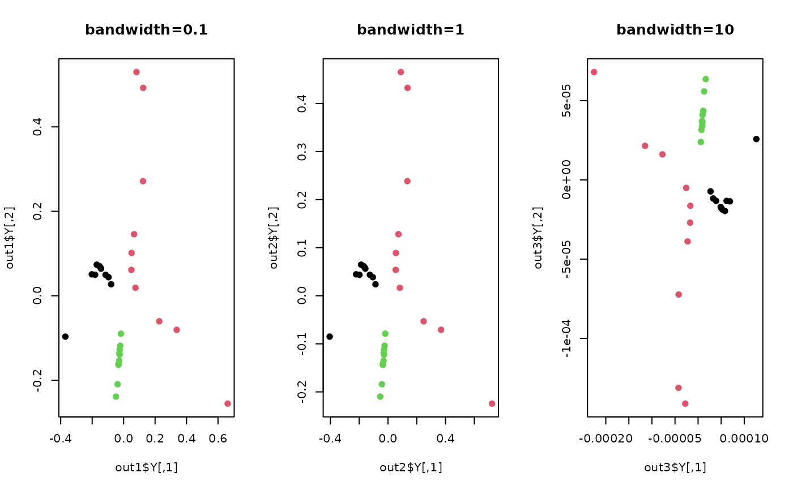

Kernel LSDA (KLSDA) is a nonlinear extension of LFDA method using kernel trick. It applies conventional kernel method
to extend excavation of hidden patterns in a more flexible manner in tradeoff of computational load. For simplicity,
only the gaussian kernel parametrized by its bandwidth t is supported.
do.klsda( X, label, ndim = 2, preprocess = c("center", "scale", "cscale", "whiten", "decorrelate"), alpha = 0.5, k1 = max(ceiling(nrow(X)/10), 2), k2 = max(ceiling(nrow(X)/10), 2), t = 1 )
| X | an \((n\times p)\) matrix or data frame whose rows are observations and columns represent independent variables. |
|---|---|
| label | a length-\(n\) vector of data class labels. |
| ndim | an integer-valued target dimension. |
| preprocess | an additional option for preprocessing the data.
Default is "center". See also |
| alpha | balancing parameter for between- and within-class scatter in \([0,1]\). |
| k1 | the number of same-class neighboring points (homogeneous neighbors). |
| k2 | the number of different-class neighboring points (heterogeneous neighbors). |
| t | bandwidth parameter for heat kernel in \((0,\infty)\). |
a named list containing
an \((n\times ndim)\) matrix whose rows are embedded observations.
a list containing information for out-of-sample prediction.
Cai D, He X, Zhou K, Han J, Bao H (2007). “Locality Sensitive Discriminant Analysis.” In Proceedings of the 20th International Joint Conference on Artifical Intelligence IJCAI'07, 708--713.
Kisung You
## generate 3 different groups of data X and label vector x1 = matrix(rnorm(4*10), nrow=10)-50 x2 = matrix(rnorm(4*10), nrow=10) x3 = matrix(rnorm(4*10), nrow=10)+50 X = rbind(x1, x2, x3) label = rep(1:3, each=10) ## try different kernel bandwidths out1 = do.klsda(X, label, t=0.1) out2 = do.klsda(X, label, t=1) out3 = do.klsda(X, label, t=10) ## visualize opar <- par(no.readonly=TRUE) par(mfrow=c(1,3)) plot(out1$Y, col=label, pch=19, main="bandwidth=0.1") plot(out2$Y, col=label, pch=19, main="bandwidth=1") plot(out3$Y, col=label, pch=19, main="bandwidth=10")